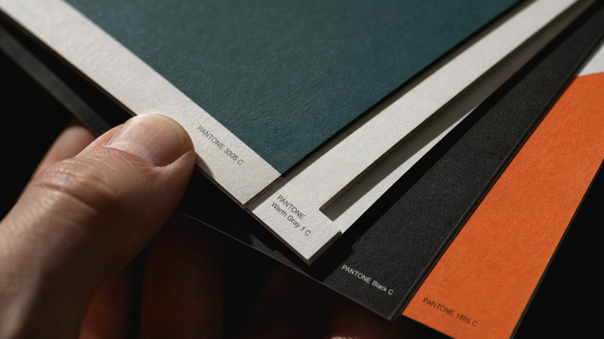
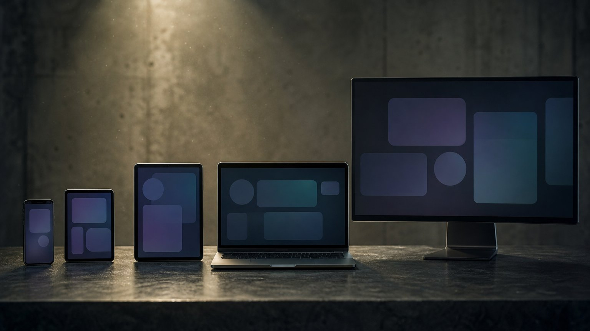

S6 · QA & polish
Rapport QA
Un audit qui montre aussi ses faiblesses : contrastes calculés au ratio près, critères WCAG 2.2 appliqués un par un, budget de poids assumé — et ce qui n'a pas pu être testé ici.
Le résultat de l'audit, sans filtre
Cette page n'est pas un argumentaire : c'est le compte rendu d'un script, tools/audit_s6.py, exécuté sur les 30 pages HTML du guide. Chaque contrôle est reproductible et le rapport brut est dans qa_report_s6.json. Quand un seuil est un standard public, il est cité ; quand c'est notre règle interne, c'est dit.
30 pages
Aucune erreur bloquante, aucun avertissement. Contrôles : structure, titres, alt, dimensions, focus, cibles, réseau.
0 lien cassé
1 479 références internes vérifiées sur l'ensemble du site, y compris les nouvelles pages interactives.
471 JPG · 62.11 Mo
Tous en 1920×1080, aucun au-delà de 880 Ko après recompression ciblée.
Contrastes : les ratios calculés, pas supposés
Le seuil AA est de 4,5:1 pour le texte courant, 3:1 pour le grand texte et les éléments d'interface. Les ratios ci-dessous sont calculés par la formule de luminance relative de la WCAG sur les couleurs réellement utilisées dans les feuilles de style. QA-04 · QA-06
| Usage | Couleurs | Ratio | Seuil | État |
|---|---|---|---|---|
| texte principal sur fond nuit | #f5f3ff sur #0b0a16 | 17.91:1 | 4.5:1 | ✓ |
| texte sur carte | #f5f3ff sur #14122a | 16.65:1 | 4.5:1 | ✓ |
| accent rose sur fond nuit | #ff5ca8 sur #0b0a16 | 6.87:1 | 3.0:1 | ✓ |
| accent turquoise sur fond nuit | #40e0d0 sur #0b0a16 | 11.96:1 | 3.0:1 | ✓ |
| accent ambre sur fond nuit | #ffc247 sur #0b0a16 | 12.21:1 | 3.0:1 | ✓ |
| texte sur bouton rose actif | #12091a sur #ff5ca8 | 6.81:1 | 4.5:1 | ✓ |
| texte sur case cochée | #0b0a16 sur #40e0d0 | 11.96:1 | 4.5:1 | ✓ |
| texte secondaire | #bbbabe sur #0b0a16 | 10.18:1 | 4.5:1 | ✓ |

Accessibilité : les quatre critères qui font échouer les sites
WCAG 2.2 a ajouté des exigences que la plupart des audits continuent de rater. Voici ce qui a été appliqué, critère par critère. QA-05
| Critère | Exigence | Ici |
|---|---|---|
| 2.4.11 Focus Not Obscured | L'élément focalisé ne doit pas être masqué par un en-tête collant | scroll-margin-top de 96 px sur les ancres ; barre de progression descendue sous l'en-tête |
| 2.4.13 Focus Appearance | Indicateur d'au moins 2 px, contraste 3:1 | Contour de 3 px turquoise, décalage 2 px ; les points de carte reçoivent un halo blanc |
| 2.5.7 Dragging Movements | Toute action par glissement doit avoir une alternative simple | La carte se manipule par boutons de filtre et clic direct : aucun glissement requis |
| 2.5.8 Target Size | Cibles ≥ 24 × 24 px CSS | Puces, items de liste, cases et options de quiz à 32 px de haut minimum |
| 1.4.3 Contrast | 4,5:1 texte / 3:1 interface | Tableau ci-dessus, calculé |
| 1.1.1 Contenu non textuel | Alternative pour chaque image | Alt descriptif sur toutes les images de contenu, alt vide sur les fonds décoratifs |
| 2.1.1 Clavier | Tout atteignable au clavier | Points de carte, cases de checklist et options de quiz sont focalisables et activables par Entrée ou Espace |
| 4.1.3 Messages de statut | Annonce des changements sans voler le focus | aria-live="polite" sur le compteur de lieux, le score et la progression |
Performance : les seuils 2026 et notre budget
Les Core Web Vitals se jugent au 75e percentile des visites réelles, séparément sur mobile et sur ordinateur. Une page passe si les trois métriques sont au vert pour 75 % des visites. QA-01
| Métrique | Bon | Médiocre | Levier appliqué |
|---|---|---|---|
| LCP | ≤ 2,5 s | > 4,0 s | Image de hero en fetchpriority="high", dimensions déclarées, pas de police distante |
| INP | ≤ 200 ms | > 500 ms | Aucune bibliothèque externe ; trois modules JS de quelques kilo-octets, traitements synchrones courts |
| CLS | ≤ 0,1 | > 0,25 | width/height sur chaque image, aucune bannière injectée au-dessus du contenu |
0 dépendance
Pas de CDN, pas de framework, pas de police distante : le rendu ne dépend d'aucun serveur tiers.
97 Ko de CSS
7 feuilles, dont une seule spécifique aux pages interactives.
92 Ko de JS
8 modules, tous vérifiés par node --check.
Responsive : cinq largeurs testées
Les points de rupture suivis sont 320, 768, 1024, 1440 et 2560 px. Deux d'entre eux ont demandé un travail spécifique : 320 px, où les grilles de la carte et du quiz passent à une colonne et où les libellés du schéma descendent à 7 px, et 2560 px, où la colonne de texte est bornée pour éviter des lignes illisibles.
| Largeur | Cible | Comportement |
|---|---|---|
| 320 px | Petit téléphone | Une colonne, champs et puces à 32 px, schéma simplifié, pas de débordement horizontal |
| 768 px | Tablette portrait | Navigation en tiroir, grilles 3 → 2 colonnes, tableaux à défilement horizontal encapsulé |
| 1024 px | Tablette paysage / petit portable | La carte interactive repasse en une colonne au-dessous du panneau |
| 1440 px | Portable / écran courant | Disposition nominale : carte + panneau côte à côte |
| 2560 px | Grand écran | Colonnes élargies mais texte borné, panneau de filtres à 460 px |

Ce qui n'est pas parfait, et pourquoi
- Les tests de contraste sont calculés, pas mesurés sur rendu réel : un dégradé de fond peut localement réduire le ratio.
- Aucun test avec lecteur d'écran (NVDA, VoiceOver) n'a été exécuté dans cet environnement : l'ARIA est vérifiée statiquement.
- Le poids total des images approche 100 Mo : c'est le prix de 546 illustrations 1920×1080. Un hébergement réel devrait servir des variantes réduites.
- La carte interactive est un schéma éditorial, pas une projection cartographique : aucune coordonnée réelle n'y est revendiquée.
SPOILER OFFICIEL
Veille de lancement : les deux patchs avant l'heure
Détail utile pour la FAQ technique et pour comprendre les premiers retours : le jeu a reçu deux mises à jour avant même d'être jouable publiquement, et Rockstar n'a publié aucune note de patch. REL-19
| Version | Date | Taille PS5 | Note de patch |
|---|---|---|---|
| 01.002.000 | 13 novembre 2026 | ≈ 1 Go | Aucune |
| 01.002.001 | 16 novembre 2026 | 602,5 Mo (≈ 1,59 Go sur Xbox, non confirmé) | Aucune |
- Déploiement par vagues — environ un tiers des joueurs d'abord, le reste douze heures plus tard. Deux consoles préparées le même jour peuvent donc afficher des numéros de build différents. REL-20
- Aucun changement de fréquence — la cible reste 30 fps partout. Les messages qui annoncent « le patch 60 fps » sont des plaisanteries de forum, pas des informations. REL-21
- Ce que ça implique pour vous — lancez le jeu une première fois avant le 19 pour absorber les patchs, et ne concluez rien sur les performances à partir d'une capture d'écran de numéro de version.